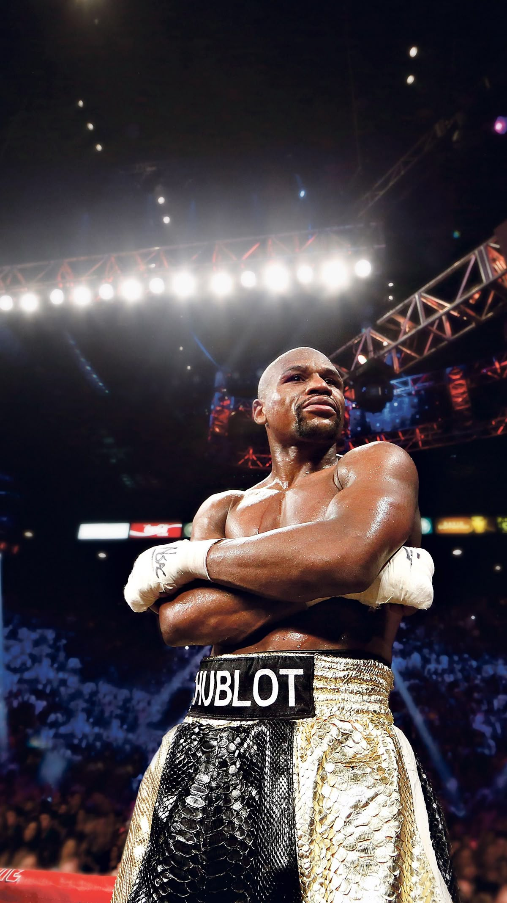

01
01ACONDICIONAMIENTO FÍSICO
MEMORIA · IDENTIDAD · COMUNIDAD
Suburbia no nació para parecer un club de boxeo. Nació para ser uno.
Una historia que todavía
se está escribiendo.
01 · NUESTRA HISTORIA
Suburbia nació de una manera simple: con ganas de enseñar boxeo en serio y construir un lugar donde nadie tuviera que entrenar solo.
Acá podemos contar cómo empezó el club, quiénes estuvieron desde el primer día, por qué se eligió el nombre Suburbia y cómo fue creciendo la comunidad. Un relato cercano, contado con la voz de quienes construyeron el espacio.
La técnica, la disciplina y el respeto fueron formando una identidad. Con el tiempo llegaron más alumnos, nuevos desafíos y un equipo que hoy comparte mucho más que una clase.
02 · CONTADO POR NOSOTROS
El profe, los alumnos y quienes estuvieron desde el comienzo cuentan qué es Suburbia, cómo nació y qué significa formar parte del equipo.
 ▶
HISTORIAS DEL BOXX
▶
HISTORIAS DEL BOXX
03 · NUESTROS PROFES
Distintas especialidades, una misma forma de trabajar: técnica, acompañamiento y compromiso con cada persona que entra al club.
 01
01ACONDICIONAMIENTO FÍSICO

02COORDINADOR GENERAL · HEAD COACH
 03
03INICIACIÓN
04 · LA HISTORIA SIGUE
Conocé cómo es la primera clase y elegí el camino que mejor representa tu experiencia.
CONOCÉ CÓMO SUMARTE →